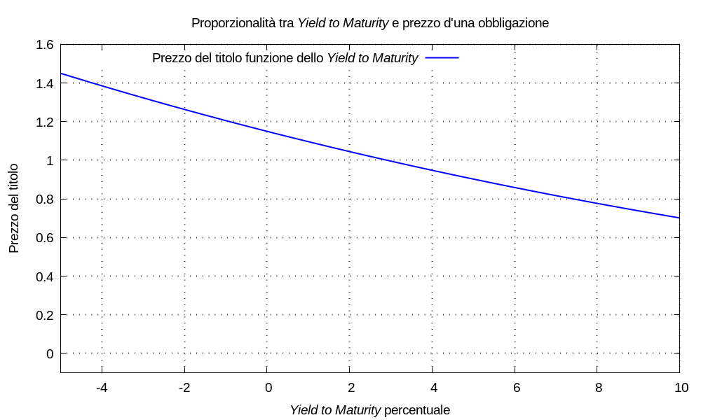

Se vale la congettura: quali che siano i criteri con cui il Tribunal stabilisce il prezzo P a cui è disposto a vendere un’obbligazione finanziaria, esiste sempre un valore ηytm che descrive tale prezzo in termini di rendimento a scadenza. L’equazione d’attualizzazione si può considerare una funzione del rendimento:
P(λytm) = Σk Ccedola,k esp(- λytm τk) + Crimborso esp(- λytm τrimborso)
Esempio (sulla proporzionalità inversa tra P e λytm) Consideriamo un’obbligazione che possa essere venduta all’istante τ0 = 0 al prezzo P e abbia rimborso al valore nominale Crimborso = 1 all’istante τrimborso = 5; le cedole future e il rimborso finale siano descritte dalla tupla:
{ (1; 0,03), (2; 0,03), (3; 0,03), (4; 0,03), (5; 0,03), (5; 1) }facendo variare il rendimento effettivo nell’intervallo λytm ∈ [-5%, +10%] s’ottiene il seguente grafico, che evidenzia la proporzionalità inversa tra le grandezze.

Riformuliamo l’idea in parole leggermente diverse: quando il Tribunal stabilisce il prezzo minimo a cui vendere, che lo convinca a rinunciare all’incasso di cedole e rimborso, stabilisce anche l’utilità minima che vuole ottenere per sé dalla vendita; se modellizziamo quest’utilità con un multimetro avente movimentazione e controvalore:
Mutilità(t) = P δ(t - tP) Uutilità(t) = P u(t - tP) esp[λutilità (t - tP)]
con tasso annuale d’utilità ηutilità = espm1(λutilità): maggiore è il prezzo P, maggiore è l’utilità per sé Uutilità(t) negl’istanti futuri.
Matematicamente, come conseguenza della proporzionalità inversa nella funzione P(λytm): stabilendo il prezzo minimo P, il Tribunal stabilisce anche il rendimento massimo ηytm d’un’attività economica (che noi abbiamo modellizzato con il multimetro) in cui: se investisse il capitale P oppure gl’incassi futuri, otterrebbe l’equivalenza agl’effetti futuri.
Tale attività può esistere oppure no, perciò quel rendimento può essere effettivamente realizzabile oppure no. In ogni caso: il rendimento ηytm non è, veramente veramente, una qualità dell’obbligazione; invece è il rendimento d’un’ipotetica altra attività economica.
Notiamo che facendo variare ηytm verso valori negativi, minori e minori: il prezzo varia verso valori positivi, maggiori e maggiori; per chi vende: valori ηytm < 0 rappresentano un’utilità estraibile maggiore.
Faremo in seguito altre considerazione su: